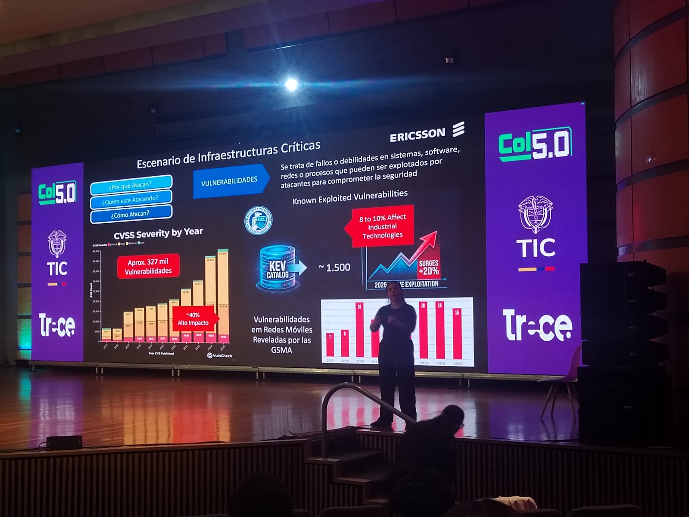
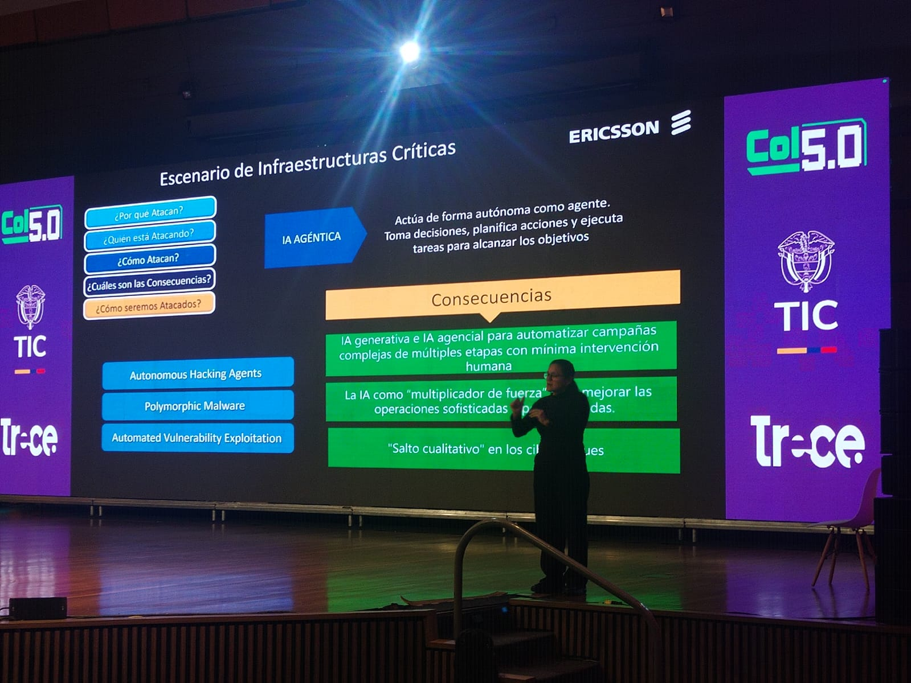
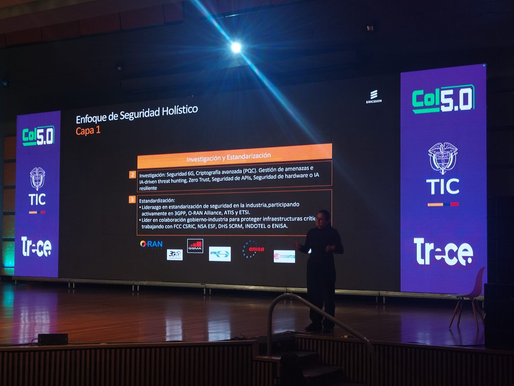

EVENTO ACADÉMICO INTERNACIONAL
Introducción
a Colombia
5.0
Un espacio de reflexión académica donde tecnología, ética y sociedad convergen para imaginar el futuro digital de Colombia.

Un espacio de reflexión académica donde tecnología, ética y sociedad convergen para imaginar el futuro digital de Colombia.
Colombia 5.0 es un encuentro académico que reúne investigadores, estudiantes y líderes para explorar cómo la tecnología, la ética y la sociedad se entrelazan en la nueva revolución industrial que se avecina.
Los ejes temáticos que guían el debate en Colombia 5.0 abarcan desde inteligencia artificial hasta sostenibilidad y gobernanza digital.
De pantalla a interfaces que funcionan: cómo los sistemas de UI en videojuegos han evolucionado para convertirse en interfaces funcionales, accesibles y de alto rendimiento.
Protegiendo las aplicaciones del futuro: estrategias, herramientas y buenas prácticas para garantizar la seguridad en el desarrollo de software moderno.
30 términos técnicos en inglés con traducción y definición aprendidos durante el evento.
Reflexión sobre IA, automatización y responsabilidad profesional en el desarrollo de software.
Programa académico
Ponencias seleccionadas del evento Colombia 5.0.
Evolución de los sistemas de interfaz gráfica de usuario en videojuegos y su aplicación en software empresarial moderno.
La conferencia "Game UI Systems: De Pantalla a Interfaces que Funcionan" exploró en profundidad cómo los principios de diseño de interfaz nacidos en la industria de los videojuegos han migrado y transformado el desarrollo de software empresarial y de aplicaciones del mundo real. El ponente demostró que elementos como el HUD (Heads-Up Display), los sistemas de feedback visual, la representación de datos en tiempo real y la accesibilidad dentro de los juegos no son únicamente herramientas de entretenimiento, sino metodologías probadas de comunicación entre la máquina y el usuario.
Se abordaron conceptos clave como el diseño diegético —interfaces que existen dentro del mundo del juego y que el personaje puede ver y tocar— versus el diseño no diegético, que sólo el jugador percibe. Esta distinción resulta fundamental para comprender cómo los sistemas modernos de dashboards industriales, monitores médicos y aplicaciones de control de tráfico aéreo han adoptado principios directamente de la industria del videojuego. La charla concluyó con una demostración de herramientas como Unity UI Toolkit y Unreal Motion Graphics.
Esta conferencia cambió mi perspectiva sobre los videojuegos: ya no los veo como simple entretenimiento, sino como laboratorios de diseño de interacción humano-computador. Las soluciones que los diseñadores de juego deben encontrar —comunicar mucha información en poco espacio, sin distraer al usuario, manteniendo fluidez— son exactamente los mismos desafíos que enfrentamos en aplicaciones de misión crítica.
The conference "Game UI Systems: From Screen to Functional Interfaces" explored in depth how UI design principles born in the video game industry have migrated and transformed enterprise software and real-world application development. The speaker demonstrated that elements such as the HUD (Heads-Up Display), visual feedback systems, real-time data representation, and in-game accessibility are not merely entertainment tools, but proven methodologies for human-machine communication.
Key concepts were addressed such as diegetic design—interfaces that exist within the game world that the character can see and touch—versus non-diegetic design, which only the player perceives. This distinction is fundamental to understanding how modern industrial dashboard systems, medical monitors, and air traffic control applications have adopted principles directly from the video game industry. The talk concluded with a demonstration of tools like Unity UI Toolkit and Unreal Motion Graphics.
This conference changed my perspective on video games: I no longer see them as simple entertainment, but as human-computer interaction design laboratories. The solutions that game designers must find—communicating a lot of information in little space, without distracting the user, while maintaining fluidity—are exactly the same challenges we face in mission-critical applications.
Estrategias y herramientas de ciberseguridad aplicadas al desarrollo de aplicaciones modernas, con enfoque en las amenazas más frecuentes y cómo mitigarlas desde el código.
La Dra. Valentina Ríos presentó una conferencia magistral sobre el estado actual de la ciberseguridad en el desarrollo de aplicaciones, destacando que el 95% de las vulnerabilidades exitosas explotan fallos que ya están documentados y tienen solución conocida. Utilizando el marco de referencia OWASP Top 10, la conferencista recorrió las diez categorías de riesgo más críticas para el software web y móvil: desde inyección SQL y scripting entre sitios (XSS), hasta fallos de configuración de seguridad y exposición de datos sensibles.
Un punto central fue la presentación del modelo Zero Trust Security, que abandona el concepto tradicional de "confiar en todo lo que está dentro de la red" y lo reemplaza por el principio de "nunca confíes, siempre verifica". La ponente demostró en vivo cómo un atacante puede explotar una API mal asegurada en menos de 3 minutos usando herramientas disponibles públicamente. La solución propuesta fue implementar DevSecOps: integrar la seguridad desde la primera línea de código.
La conferencia me hizo comprender que la seguridad no es un producto que se agrega al final; es una mentalidad que debe estar presente desde el diseño. Como futuros desarrolladores de software, tenemos la responsabilidad de proteger los datos de millones de usuarios colombianos que confían en las aplicaciones que construimos.
Dr. Valentina Ríos delivered a masterclass on the current state of cybersecurity in application development, highlighting that 95% of successful vulnerabilities exploit flaws that are already documented and have known solutions. Using the OWASP Top 10 framework, the speaker walked through the ten most critical risk categories for web and mobile software: from SQL injection and cross-site scripting (XSS), to security misconfiguration and sensitive data exposure.
A central point was the presentation of the Zero Trust Security model, which abandons the traditional concept of "trust everything inside the network" and replaces it with the principle of "never trust, always verify." The speaker demonstrated live how an attacker can exploit a poorly secured API in less than 3 minutes using publicly available tools. The proposed solution was to implement DevSecOps: integrating security from the first line of code.
The conference made me understand that security is not a product added at the end; it is a mindset that must be present from the design stage. As future software developers, we have the responsibility to protect the data of millions of Colombian users who trust the applications we build.
Momentos del evento
Imágenes representativas de Colombia 5.0.









| English | Español | Definición |
|---|---|---|
| HUD (Heads-Up Display) | Pantalla de información superpuesta | Capa de interfaz gráfica que muestra información al usuario en tiempo real sin interrumpir la experiencia principal, como barras de vida o mapas en videojuegos. |
| Diegetic UI | Interfaz diegética | Elemento de interfaz que existe dentro del mundo ficticio del juego, visible tanto para el personaje como para el jugador (ej. un reloj en la mano del personaje). |
| Non-Diegetic UI | Interfaz no diegética | Elementos de interfaz que solo el jugador puede ver y que no forman parte del mundo del juego, como menús, puntuaciones y barras de estado. |
| Widget | Componente de interfaz | Elemento individual reutilizable de una interfaz gráfica, como un botón, barra deslizante o cuadro de texto, que puede configurarse y combinarse para construir UIs. |
| Wireframe | Esquema de interfaz | Boceto simplificado y de baja fidelidad que muestra la estructura y disposición de los elementos de una interfaz antes del diseño visual final. |
| UX (User Experience) | Experiencia de usuario | Conjunto de sensaciones, percepciones y respuestas que tiene una persona al interactuar con un producto o sistema digital, abarcando usabilidad, accesibilidad y satisfacción. |
| UI (User Interface) | Interfaz de usuario | Capa visual e interactiva de una aplicación mediante la cual el usuario se comunica con el sistema, incluyendo botones, menús, íconos y cualquier elemento gráfico interactivo. |
| Responsive Design | Diseño responsivo | Técnica de diseño web que permite que una interfaz se adapte automáticamente a distintos tamaños de pantalla, desde teléfonos móviles hasta monitores de escritorio. |
| Motion Graphics | Gráficos en movimiento | Piezas de animación gráfica utilizadas en interfaces y videos para comunicar información, guiar la atención del usuario o mejorar la experiencia visual. |
| Accessibility (a11y) | Accesibilidad | Práctica de diseñar interfaces usables por personas con diversas capacidades, incluyendo discapacidades visuales, auditivas o motoras, siguiendo estándares como WCAG. |
| Rendering Pipeline | Canal de renderizado | Secuencia de etapas de procesamiento que transforma datos 3D en una imagen 2D final en pantalla, fundamental en motores de juego y aplicaciones gráficas. |
| Game Engine | Motor de videojuego | Software de desarrollo que proporciona herramientas para crear videojuegos y aplicaciones interactivas, como Unity o Unreal Engine, incluyendo físicas, gráficos y audio. |
| Feedback Loop | Ciclo de retroalimentación | Mecanismo en el que el sistema responde a las acciones del usuario con señales visuales, sonoras o hápticas que confirman o corrigen su comportamiento. |
| Prototype | Prototipo | Versión funcional preliminar de un producto o interfaz creada para probar conceptos, flujos y usabilidad antes de desarrollar la versión definitiva. |
| Sprite | Imagen 2D animable | Gráfico bidimensional utilizado en videojuegos e interfaces para representar personajes, íconos o elementos visuales que pueden animarse mediante secuencias de cuadros. |
| OWASP | Proyecto de Seguridad en Aplicaciones Web Abiertas | Organización sin fines de lucro que publica guías y herramientas de ciberseguridad, incluyendo el OWASP Top 10, lista de las vulnerabilidades más críticas en aplicaciones web. |
| Zero Trust | Confianza cero | Modelo de seguridad que no confía automáticamente en ningún usuario o dispositivo dentro o fuera de la red, requiriendo verificación continua de identidad y autorización. |
| Encryption | Cifrado | Proceso de transformar datos legibles en un formato ilegible usando algoritmos matemáticos, de modo que solo quienes posean la clave correcta puedan descifrarlos. |
| SQL Injection | Inyección SQL | Ataque de seguridad en el que el atacante inserta código SQL malicioso en campos de entrada de una aplicación para manipular o acceder a la base de datos sin autorización. |
| XSS (Cross-Site Scripting) | Scripting entre sitios | Vulnerabilidad web que permite a un atacante inyectar scripts maliciosos en páginas vistas por otros usuarios, robando cookies, sesiones o redirigiendo a sitios fraudulentos. |
| Pentesting (Penetration Testing) | Pruebas de penetración | Práctica de simular ataques cibernéticos controlados sobre un sistema para identificar vulnerabilidades antes de que actores maliciosos las exploten. |
| DevSecOps | Desarrollo, Seguridad y Operaciones | Metodología que integra prácticas de seguridad en cada etapa del ciclo de desarrollo de software, haciendo la seguridad responsabilidad de todo el equipo. |
| Firewall | Cortafuegos | Sistema de seguridad que monitorea y controla el tráfico de red entrante y saliente según reglas predefinidas, actuando como barrera entre redes confiables y no confiables. |
| Authentication | Autenticación | Proceso de verificar la identidad de un usuario, dispositivo o sistema antes de concederle acceso a un recurso, utilizando contraseñas, biometría, tokens u otros métodos. |
| API (Application Programming Interface) | Interfaz de Programación de Aplicaciones | Conjunto de reglas y protocolos que permite que diferentes aplicaciones se comuniquen entre sí, facilitando el intercambio de datos y funcionalidades de forma estandarizada. |
| Vulnerability | Vulnerabilidad | Debilidad o fallo en un sistema, software o proceso que puede ser explotado por un atacante para comprometer la confidencialidad, integridad o disponibilidad de la información. |
| Token | Ficha de acceso | Cadena de datos generada por un servidor que actúa como credencial de acceso temporal, usada comúnmente en sistemas de autenticación como OAuth y JWT. |
| Cloud Computing | Computación en la nube | Modelo de entrega de servicios informáticos a través de internet, permitiendo escalar recursos bajo demanda sin infraestructura local. |
| Malware | Software malicioso | Cualquier programa diseñado con la intención de dañar, robar datos o tomar control de sistemas sin el consentimiento del usuario, incluyendo virus, ransomware y spyware. |
| Threat Modeling | Modelado de amenazas | Proceso estructurado de identificar, analizar y priorizar posibles amenazas de seguridad a un sistema, utilizado para diseñar contramedidas antes de que ocurra un ataque. |
| Open Source | Código abierto | Software cuyo código fuente es público y puede ser libremente usado, modificado y distribuido por cualquier persona, fomentando la colaboración y la transparencia. |
Reflexión final
Colombia 5.0 nos dejó una certeza que va más allá de las herramientas y los lenguajes de programación: la tecnología sin ética es simplemente poder sin responsabilidad. Las dos conferencias que tuve el privilegio de presenciar —sobre Game UI Systems y Ciberseguridad en Aplicaciones— tocaron, desde ángulos distintos, la misma fibra fundamental.
En el campo del diseño de interfaces para videojuegos, la accesibilidad dejó de ser una opción para convertirse en un imperativo. Cuando una interfaz mal diseñada excluye a personas con daltonismo, discapacidades motrices o cognitivas, no es un error de programación, es un fracaso ético.
En ciberseguridad, la reflexión es aún más urgente. Cada aplicación que desarrollamos almacena datos reales de personas reales: direcciones, información médica, datos financieros. La Dra. Ríos lo expresó con claridad: el código inseguro es código irresponsable.
La IA se integra en interfaces de juego y en sistemas de detección de amenazas. Su uso debe ser transparente: los usuarios tienen derecho a saber cuándo una IA toma decisiones que los afectan.
Los sistemas modernos recopilan datos de comportamiento. La pregunta ética es siempre la misma: ¿el usuario consintió? ¿Los datos están protegidos? La privacidad es un derecho, no un lujo.
La automatización de pruebas de seguridad y la generación de UI son una revolución en productividad. Pero la automatización sin supervisión puede escalar errores a velocidades imposibles de controlar.
Colombia 5.0 demostró que nuestra industria TIC puede construir tecnología de clase mundial. Ese poder viene con responsabilidad: el software que hacemos afecta a 50 millones de personas.
Un ingeniero que ignora la seguridad es como un arquitecto que ignora los códigos de construcción. Como profesionales, tenemos la obligación de cuestionar requisitos que pongan en riesgo a los usuarios.
"Colombia 5.0 no fue solo un evento de tecnología. Fue un recordatorio de que detrás de cada línea de código hay personas que confían en nosotros. Esa confianza es el mayor privilegio y la mayor responsabilidad de quienes elegimos esta profesión."
Colombia 5.0 left us with a certainty that goes beyond tools and programming languages: technology without ethics is simply power without accountability. The two conferences I attended—on Game UI Systems and Application Cybersecurity—touched, from different angles, the same fundamental point.
In video game interface design, accessibility has stopped being an option and become an imperative. When a poorly designed interface excludes people with color blindness, motor, or cognitive disabilities, it is not a programming error—it is an ethical failure.
In cybersecurity, the reflection is even more urgent. Every application we develop stores real data of real people: addresses, medical information, financial data. Dr. Ríos said it clearly: insecure code is irresponsible code.
AI is integrated into game interfaces and threat detection systems. Its use must be transparent: users have the right to know when an AI makes decisions that affect them.
Modern systems collect user behavior data. The ethical question is always the same: did the user consent? Is the data protected? Privacy is a right, not a luxury.
Automation of security testing and UI generation is a productivity revolution. But automation without oversight can scale errors at speeds impossible to control manually.
Colombia 5.0 showed that our ICT industry can build world-class technology. That power comes with responsibility: the software we build affects 50 million people.
A software engineer who ignores security is like an architect who ignores building codes. As professionals, we have the obligation to question requirements that put users at risk.
"Colombia 5.0 was not just a technology event. It was a reminder that behind every line of code there are people who trust us. That trust is the greatest privilege and the greatest responsibility of those who choose this profession."